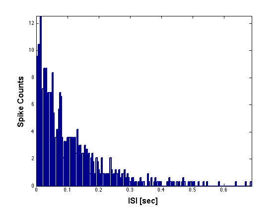
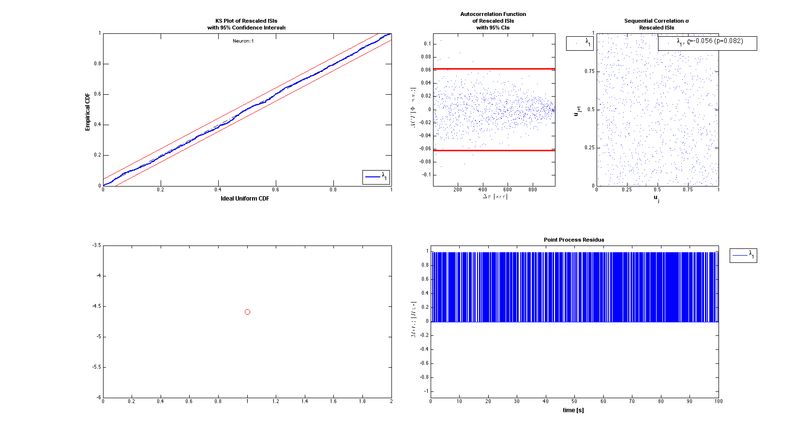
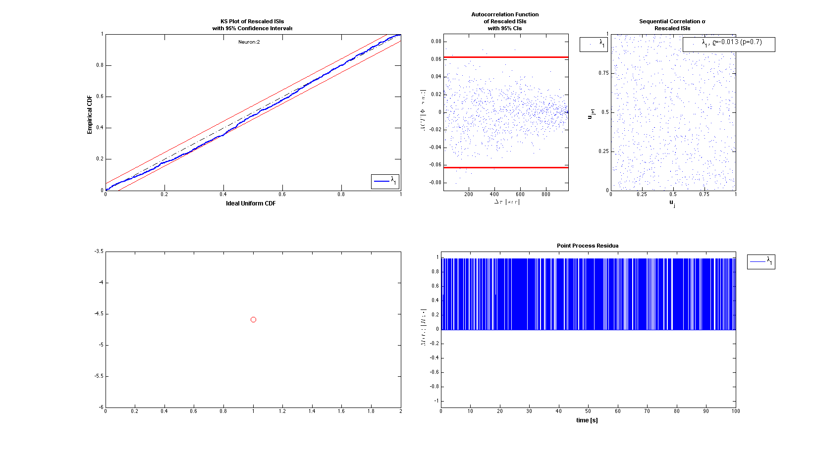
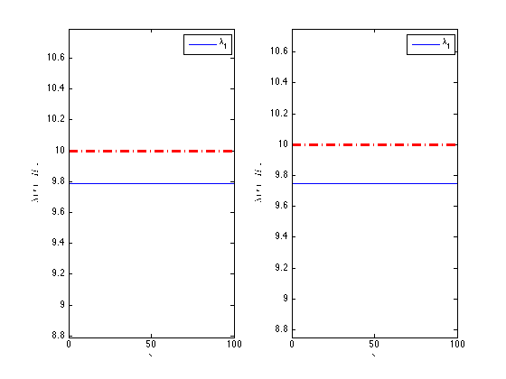
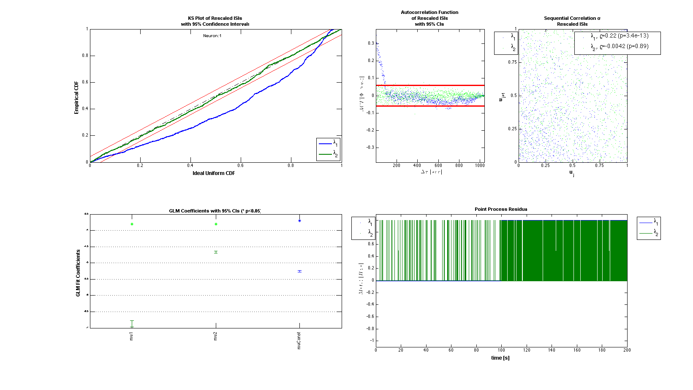
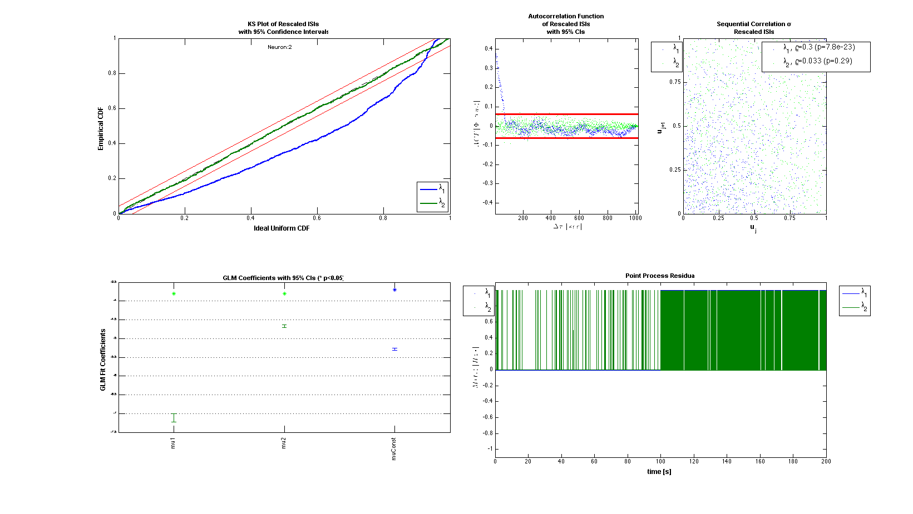
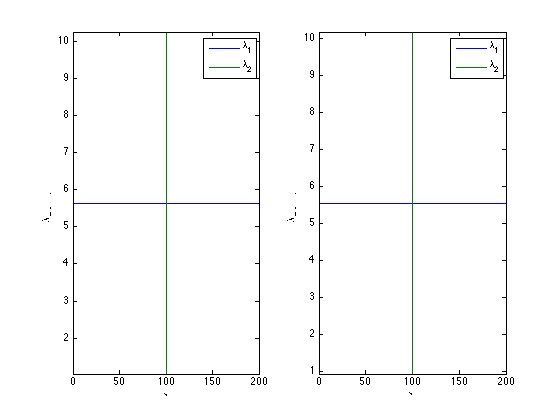

Software Validation Data Set
The purpose of this example is to two important test cases of data to validate the Neural Spike Analysis Toolbox.
Contents
Case #1: Constant Rate Poisson Process
First we want to show that when neural firing activity is generated from a constant rate poisson process, the algorithm is able to estimate the value of this constant rate.
clear all; close all; p=0.01; % bernoilli probability N=100001; % Number of coin flips delta = 0.001; % binsize T=N*delta; % total time window lambda=N*p/T % lambda*T = N*p mu = log(lambda*delta/(1-lambda*delta))
lambda =
10
mu =
-4.5951
Now generate data for two neurons based on this constant rate
for i=1:2 t=linspace(0,T,N); ind=rand(1,N)<p; %generate the coin-flip indices for heads or 1's spikeTimes = t(ind); %get time spikes based on indices nst{i}=nspikeTrain(spikeTimes,'',delta); % create neuron spike train nst{i}.setMinTime(0); nst{i}.setMaxTime(T); end
For a sanity check we can plot the ISI histogram for the two neurons and verify that they are exponentially distributed with \lambda = N*p/T;
nst{1}.plotISIHistogram;
 Setup the analysis using the Neural Spike Analysis Toolbox Since we are going to try to fit a constant rate model, we create a baseline covariate that is constant and equal to 1 for the duration of the trial. This data in the covarate will be labeled 'constant';
spikeColl=nstColl(nst); %create a nstColl - a collection of spikeTrains cov=Covariate(t,ones(length(t),1),'Baseline','s','','',{'mu'}); cc=CovColl({cov}); % Gather all the covariates trial=Trial(spikeColl, cc); %Create the trial % Specify how we want to perform the analysis clear c; sampleRate=1000; %Try just using the 'constant' data from the baseline covariate c{1} = TrialConfig({{'Baseline','mu'}},sampleRate,[],[]); c{1}.setName('Baseline'); cfgColl= ConfigColl(c); %place desired configurations in a ConfigColl structure
Run the analysis
results = Analysis.RunAnalysisForAllNeurons(trial,cfgColl,0);
results{1}.plotResults; subplot(2,4,[5 6]); plot(mu,'ro', 'MarkerSize',10);
results{2}.plotResults; subplot(2,4,[5 6]); plot(mu,'ro', 'MarkerSize',10);
figure;
subplot(1,2,1);results{1}.lambda.plot; hold on; plot(results{1}.lambda.time,lambda*ones(length(results{1}.lambda.time),1),'r-.','LineWidth',3);
subplot(1,2,2);results{2}.lambda.plot; hold on; plot(results{2}.lambda.time,lambda*ones(length(results{2}.lambda.time),1),'r-.','LineWidth',3);
Analyzing Configuration #1: Neuron #1,2  
Case #2: Piece-wise Constant Rate Poisson Process
Make a joint process be the sum of two independet and non-overlapping Poisson processes with different rates. During the first interval, only observer arrivals from process 1, and during the second interval only observe arrivals from the second process. Compare the results of estimate the complete process as the sum of two distinct independent and non-overlapping Poisson processes versus a single constant rate process.
% Process 1 p1=0.001; % bernoilli probability of process 1 N1=100000; % delta = 0.001; T1=N1*delta; lambda1=N1*p1/T1 % lambda*T = N*p mu1 = log(lambda1*delta/(1-lambda1*delta)) %Process 2 p2=0.01; % bernoilli probability of process 1 N2=100000; T2=N2*delta; lambda2=N2*p2/T2 % lambda*T = N*p mu2 = log(lambda2*delta/(1-lambda2*delta)) %Estimate of constant rate process: lambdaConst = (N1*p1 + N2*p2)/(T1+T2) muConst = log(lambdaConst*delta/(1-lambdaConst*delta))
lambda1 =
1
mu1 =
-6.9068
lambda2 =
10
mu2 =
-4.5951
lambdaConst =
5.5000
muConst =
-5.1975
Generate the data for 2 neurons
for i=1:2 tTot = linspace(0,(T1+T2),(N1+N2+1)); t1=tTot(tTot<=T1); ind1=rand(1,N1)<p1; spikeTimes1 = t1(ind1); t2=tTot(tTot>T1); ind2=rand(1,N2)<p2; spikeTimes2 = t2(ind2); tTot = [t1'; t2']; nst{i}=nspikeTrain([spikeTimes1 spikeTimes2],'',delta); nst{i}.setMinTime(0); nst{i}.setMaxTime(max(t2)); end
Generate the trial data;
spikeColl=nstColl(nst); %create a nstColl cov=Covariate(tTot,[ones(length(tTot),1), tTot<=max(t1), tTot>max(t1)],'Baseline','s','','',{'muConst','mu1','mu2'}); cc=CovColl({cov}); % Specify how we want to perform the analysis sampleRate=1000; trial=Trial(spikeColl, cc); clear c; % Constant rate throughout c{1} = TrialConfig({{'Baseline','muConst'}},sampleRate,[],[]); c{1}.setName('Baseline'); % Constant rate for epoch1 and Constat rate for epoch2 but distinct c{2} = TrialConfig({{'Baseline','mu1','mu2'}},sampleRate,[],[]); c{2}.setName('Variable'); cfgColl= ConfigColl(c);
Run the analysis
results = Analysis.RunAnalysisForAllNeurons(trial,cfgColl,0);
results{1}.plotResults;
results{2}.plotResults;
figure;
subplot(1,2,1); results{1}.lambda.plot;
subplot(1,2,2); results{2}.lambda.plot;
Analyzing Configuration #1: Neuron #1,2 Analyzing Configuration #2: Neuron #1,2  
Compare the results across the two neurons
Summary = FitResSummary(results); Summary.plotSummary;